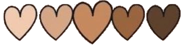

Diego Lawliet
"La tostaduría de café que visité recientemente es simplemente impresionante. La fragancia del café tostado fresco impregna el lugar y el personal es muy amable y conocedor. Probé su café de origen único y fue la mejor taza de café que he tenido en mucho tiempo. Definitivamente volveré".